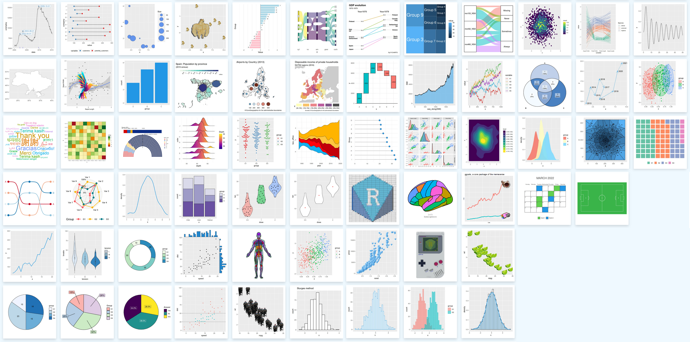

| Variable | Description | Type |
|---|---|---|
| CODGEO | Identifiant unique de la commune | entier |
| commune | Nom de la commune | caractère |
| region | Région | caractère |
| annee | Année d'observation | entier (3 modalités) |
| population | Population totale | numérique |
| revenu_median | Revenu médian par ménage (€) | numérique |
| taux_chomage | Taux de chômage (%) | numérique |
| part_65plus | Part des 65 ans et plus (%) | numérique |
| part_menages_1p | Part des ménages d'une personne (%) | numérique |
| surface_urbaine | Surface urbaine -- bâti, routes, zones d'activité -- (ha) | numérique |
| surface_verte | Surface d'espaces verts -- parcs, jardins, forêts, espaces naturels -- (ha) | numérique |
| part_verte | Part d'espaces verts dans la surface totale (%) | numérique |
| emis_co2_hab | Émissions de CO2 par habitant (tonnes eq. CO2/hab/an) | numérique |
| emis_co2_total | Émissions totales de CO2 (milliers de tonnes eq. CO2) | numérique |
| part_transport | Part des émissions dues aux transports (%) | numérique |
| part_residentiel | Part des émissions dues au résidentiel (%) | numérique |
Visualisation avec
Dernière mise à jour : 05 oct. 2026
Sandrine LYSER
Présentation du cours
Objectifs pédagogiques
Dans ce cours, vous apprendrez à…
- utiliser R sous RStudio en utilisant les projets RStudio
- travailler de manière reproductible, en organisant votre travail et en structurant vos scripts
- utiliser les principaux outils du
tidyversepour manipuler et visualiser des données - produire des visualisations de données sous forme de graphiques de qualité, en utilisant {ggplot2}
Organisation des séances
Vendredi 02 octobre 2026 (3h)
R et RStudio, bonnes pratiques pour une analyse reproductible : du projet autidyverseLundi 05 octobre 2026 (2h30)
Premiers graphiques {ggplot2}
Transformation des données et approfondissements {ggplot2}Vendredi 09 octobre 2026 (4h30)
Visualisations avancéesVendredi 02 novembre (2h)
Évaluation finale (1h30)
Débriefing évaluation et cours
Évaluation finale
Format pratique sur ordinateur pour évaluer
- l’organisation du code
- la pertinence graphique
- la bonne utilisation du
tidyverse - la clarté/reproductibilité du script
Données utilisées dans les exemples
Les exemples du cours s’appuient sur le jeu de données Journals, disponible dans le package {Ecdat}
Ce jeu de données se compose de 180 observations décrites par 10 variables
- title : titre de la revue
- pub : éditeur
- society : société
- libprice : prix de l’abonnement
- pages : nombre de pages
- charpp : nombre de caractères par page
- citestot : nombre total de citations
- date1 : année de création de la revue
- oclc : nombre d’abonnements
- field : domaine de la revue
Données utilisées dans les exercices
Les exercices se feront sur le jeu de données fictives communes, disponible dans l’espace elearn
Dictionnaire des variables
Séance 1. R et RStudio, bonnes pratiques pour une analyse reproductible : du projet au tidyverse
Objectifs pédagogiques
À l’issue de cette séance, vous serez capable de
- comprendre ce qu’est la reproductibilité
- de mettre en oeuvre de “bonnes” pratiques sous R/RStudio pour répondre aux enjeux de reproductibilité
- créer et organiser un projet RStudio, en structurant vos scripts
- importer un jeu de données
- effectuer les premières manipulations et transformations sur les données avec le package {dplyr}
La reproductibilité
Pourquoi parler de reproductibilité ?
Une analyse ne se résume pas à son résultat, celui-ci doit pouvoir être
- compris
- vérifié
- réexécuté
- corrigé
- mis à jour
- partagé avec d’autres personnes
Qu’est-ce qu’une analyse reproductible ?
Une analyse est dite reproductible lorsque l’on peut obtenir les mêmes résultats en utilisant
- les mêmes données en entrée
- les mêmes méthodes
- les mêmes étapes de calcul
- le même code
La reproductibilité est un processus qui peut être reproduit par une autre personne et/ou à partir des mêmes données et qui permet d’expliquer et partager son travail
Reproductibilité ? Réplicabilité ?
Deux notions à distinguer
- reproductibilité : en utilisant le même code et les mêmes données , on retrouve le même résultat (valeur numérique, tableau, graphique, etc.)
- réplicabilité : en appliquant la même démarche, sur de nouvelles données, on obtient des résultats comparables
Que se passe-t’il sans “bonnes” pratiques ?
- Des résultats impossibles à retrouver
- Des chemins de fichiers propres à l’ordinateur de l’auteur
- Des modifications manuelles sur le fichier de données non documentées
- Des commandes exécutées dans la console qui ne figurent pas dans le script
- Des erreurs de copier-coller ou des résultats copiés manuellement dans un rapport
- Des versions différentes de R ou des packages
- Des difficultés pour identifier les packages utilisés
- Des difficultés à transmettre ou à reprendre un travail plusieurs mois plus tard
Ces problèmes sont souvent liés à l’organisation du travail
Trois grands principes à respecter pour éviter ces erreurs (Orozco et al., 2020)
- Organiser son travail
- Coder pour les autres
- Automatiser le plus possible
De la donnée au résultat : une chaîne de travail transparente et documentée
À chaque étape, il faut pouvoir répondre à trois questions
- Qu’a-t’on fait ?
- Pourquoi l’a-t’on fait ?
- Peut-on refaire cette étape ?
Chaque opération doit être identifiable, justifiée et réexécutable
La reproductibilité repose sur la conservation
- des données
- du flux de traitement (scripts d’importation et de traitement, fonctions, méthodes statistiques utilisées)
- de la documentation (métadonnées, dictionnaire des variables, version de R et des packages, instructions pour relancer l’analyse)
- des informations nécessaires à l’interprétation (tableaux, graphiques)
Les projets RStudio
Les projets RStudio sont utiles pour
- organiser plus facilement son travail : 1 projet = 1 étude
environnement isolé, pas de conflits entre projets - regrouper dans un même dossier tous les scripts : scripts R/quarto, fonctions, données, résultats, graphiques, etc.
- améliorer la portabilité et faciliter les collaborations : utilisation des chemins de fichiers relatifs
reproductibilité facilitée
Chemins absolus/relatifs
Le chemin absolu est exprimé par rapport au disque dur, à l’ordinateur
Exemple :C:/Users/...Le chemin relatif est exprimé par rapport au projet
Exemple :data/mon_fichier.csv
Le répertoire par défaut du projet est le dossier où est enregistré le projet sur votre machine
Comment créer un projet ?
Cliquez sur
New Project > New Directory > New Projectet complétez les informations requises- le nom du dossier/projet
- son emplacement (dossier de votre choix)
Quand le projet est créé
- RStudio redémarre et se place dans ce projet
- le projet apparaît dans l’onglet Files de RStudio
Pour ranger efficacement les différents documents liés à l’analyse, vous pouvez créer les sous-dossiers
- soit en cliquant sur New Folder dans le menu en haut de l’onglet Files
- soit de façon classique, à partir de l’explorateur de fichier de votre machine
Comment structurer ses projets ?
Choisissez la structuration qui vous correspond le mieux et qui permet
- de rassembler tous les éléments liés au projet dans un seul dossier
- de structurer en dossiers/sous-dossiers pour séparer données source/créées, scripts, documentation, résultats, etc.
Les données initiales et les scripts de traitement sont les plus importants
Source des figures 2 & 3 : https://learn.r-journalism.com/en/publishing/workflow/r-projects/ - Dernier accès : 2026-09-08
Les scripts R
- Ils permettent de garder la trace du processus de création de chaque variable, tableau, figure, etc., ce qui permet de refaire les traitements dans leur globalité
- Ils sont facilement partageables avec d’autres, sous réserve de respecter des pratiques de “bon” usage
- coder de façon compréhensible avec des commentaires et en documentant ses fonctions
- donner des noms explicites aux objets et fonctions
- utiliser les conventions de nommage, notamment pour distinguer les variables d’origine des variables créées
- coder de façon compréhensible avec des commentaires et en documentant ses fonctions
- Pour les variables, utiliser un nom
Exemple :temperature_max - Pour les fonctions, utiliser un verbe
Exemple :create.mapserait une fonction qui permettrait de créer une carte - Pour distinguer variables d’origine / variables recodées, on peut utiliser un préfixe ou un suffixe
Exemple :ageest la variable d’origine etage_recodest la variable recodée
Les conventions de nommage
Il existe différentes conventions
allowercase: tout en minuscule, sans séparateurperiod.separated: tout en minuscule, mots séparés par des pointsunderscore_separated: tout en minuscule, mots séparés par un underscore (_)lowerCamelCase: première lettre des mots en majuscule, à l’exception du premier mot ; et si nom simple, tout en minusculeUpperCamelCase: première lettre des mots en majuscule, y compris le premier et même lorsque le nom est composé d’un seul mot
Possibilité de mixer les conventions mais en gardant une cohérence afin de faciliter la compréhension des fichiers et du code
R est sensible à la casse ce qui signifie que variable et Variable sont deux objets différents
Comment organiser ses scripts ?
- Utiliser une convention de dénomination des fichiers et donner des noms explicites
- Séparer les traitements
- import et préparation des données (nettoyage, fusion, filtrage)
- traitement statistique
- analyses univariées
- analyses bivariées
- analyses multivariées/modélisation
- production des résultats, rapports
- import et préparation des données (nettoyage, fusion, filtrage)
Comment nommer ses scripts ?
- Une “bonne” pratique consiste à utiliser la structure
numero_nom_millesime.extension
- Le nom ne doit contenir ni caractères spéciaux (`
-.,;:\/$^) ni caractères accentués
Exemple :01_import_donnees_20250606.R;02_nettoyage_donnees_20250610.R;03_analyses_univariees_20250701.R
Ressources sur le processus d’analyse et de communication des données reproductibles
Comment structurer ses scripts ?
- Commencer l’écriture du script par les métadonnées (titre, auteur, date, version de R, encodage, etc.)
- Lister les packages utilisés, au début des scripts, pour les identifier plus rapidement, en notant leur version
- Structurer en parties et sous-parties, facilement grâce à l’addin
strcode
Installation : remotes::install_github("lorenzwalthert/strcode")
- Commenter les scripts, en particulier pour expliquer les étapes-clés (= une aide pour les autres, mais aussi pour soi, pour plus tard)
Le préfixage
La notation
peut remplacer le code
Avantages
- Évite les conflits si plusieurs packages ont une fonction avec le même nom (mais des paramètres différents)
Exemple : la fonctionfilter()existe dans les packages {stats} et {dplyr} - Identifie le package d’où provient une fonction
- Ne charge pas la totalité d’un package pour n’utiliser qu’une seule de ses fonctions
Aide pour écrire les scripts
Activer les options de diagnostic pour signaler les erreurs dans les scripts sous RStudio : Tools > Global Options > Code > Diagnostics
package {styler} : mettre en forme le code selon le Tidyverse Style Guide (ou selon son propre style)
package {lintr} : vérifier que le code est conforme à un guide de style donné
Le fichier README
Ce fichier, généralement un fichier au format .txt ou .md (markdown), qui présente le projet, sa structuration et les étapes d’exécution des différents script pour comprendre, reproduire et utiliser le projet, est à placer dans le dossier du projet
Exemple de fichier README
# VisuR_2026
Projet du cours "Visualisation des données sous R" pour l'année universitaire 2026-2027
## Structure
- data/ : données
├── sources/ : données sources, données brutes
└── produites/ : données produites
- scripts/ : scripts R, qmd
- outputs/ : graphiques et tableaux exportés
- docs/ : rapports et supports
## Comment reproduire les analyses
1. Ouvrir le projet `VisuR_2026.Rproj`
2. Exécuter les scripts dans l'ordre (01_import.R, 02_nettoyage.R, etc.)
3. Les graphiques générés sont enregistrés dans le dossier outputs
4. Le rapport d'étude est enregistré dans le dossier docsCiter la version de R ainsi que les packages que vous avez utilisés dans vos travaux
Avec la fonction citation()
Pour citer la version de R
To cite R in publications use:
R Core Team (2026). _R: A Language and Environment for Statistical
Computing_. R Foundation for Statistical Computing, Vienna, Austria.
doi:10.32614/R.manuals <https://doi.org/10.32614/R.manuals>.
<https://www.R-project.org/>.
Une entrée BibTeX pour les utilisateurs LaTeX est
@Manual{,
title = {R: A Language and Environment for Statistical Computing},
author = {{R Core Team}},
organization = {R Foundation for Statistical Computing},
address = {Vienna, Austria},
year = {2026},
doi = {10.32614/R.manuals},
url = {https://www.R-project.org/},
}
We have invested a lot of time and effort in creating R, please cite it
when using it for data analysis. See also 'citation("pkgname")' for
citing R packages.Pour citer un package
To cite ggplot2 in publications, please use
H. Wickham. ggplot2: Elegant Graphics for Data Analysis.
Springer-Verlag New York, 2016.
Une entrée BibTeX pour les utilisateurs LaTeX est
@Book{,
author = {Hadley Wickham},
title = {ggplot2: Elegant Graphics for Data Analysis},
publisher = {Springer-Verlag New York},
year = {2016},
isbn = {978-3-319-24277-4},
url = {https://ggplot2.tidyverse.org},
}À VOUS DE JOUER !
Exercice 1
- Vérifier que [R] et [RStudio] sont installés
- Définir l’encodage UTF-8
- Vérifier que le package
{tidyverse}est installé et l’installer si ce n’est pas le cas
Quelle est la version de [R] et des packages {tidyverse} et {ggplot2} que vous utilisez ?
- Sous [RStudio], créer un projet nommé
VisuR_exercices - Créer les dossiers nécessaires pour une bonne structuration de votre travail
- Déposer le fichier
communes.csvdans le dossier adéquat de votre projet - Dans votre projet [RStudio], créer un script [R] nommé
01_Exercices_VisuR.R, qui servira pour les exercices à venir, durant lesquels vous aurez besoin des packages{readr}et{dplyr} - Commencer l’écriture de ce script avec ces premiers éléments
Solution 1.
Proposition de structuration du projet
Script 01_Exercices_VisuR.R
Code
# ____________________________________________________________________________
# Script : Script pour les exercices "VisuR"
# Auteur : Sandrine Lyser
# Date : 02 oct. 2026
# Dernière modification : sys.date()
# Text encoding : UTF-8
# R version : R version 4.6.0 (2026-04-24 ucrt) -- "Because it was There"
# ____________________________________________________________________________
# ____________________________________________________________________________
# Packages ####
library(readr) # v2.2.0
library(dplyr) # v1.2.1L’univers du tidyverse
Présentation générale et installation
- Ensemble de packages reprenant des opérations courantes de R, qui partagent une même philosophie et syntaxe pour travailler ensemble et faciliter, la manipulation, l’analyse et la visualisation des données
- L’accent est mis sur la lisibilité et la chaîne d’opérations, via l’opérateur pipe
|>
code dans l’ordre logique des étapes, moins d’objets intermédiaires et de parenthèses imbriquées que dans la syntaxe R de base
La commande install.packages("tidyverse") installe simultanément plusieurs packages
- {dplyr} : manipulation des données
- {forcats} : traitement des variables qualitatives
- {ggplot2} : visualisation des données
- {lubridate} : manipulation des dates et heures
- {purrr} : programmation
La commande library("tidyverse") charge simultanément ces neuf packages au coeur du tidyverse
L’opérateur pipe
- Opérateur qui permet d’enchaîner des opérations : il prend la sortie d’une fonction (ou d’une expression) et la passe automatiquement comme premier argument à la fonction suivante
- Initialement fourni dans le package {magrittr} et noté
%>% - Implémenté dans le langage R de base depuis la version 4.1.0 et noté
|>
Il est recommandé d’utiliser le pipe natif de R |>
Comment utiliser le pipe natif sous RStudio ?
- Allez dans Tools > Global Options > Code > Editing
- Cochez Use native pipe operator, |> (requires R 4.1+)
Les tibbles
- Version modernisée des dataframes, proposée dans le cadre du
tidyverse - Plus pratiques à utiliser que les dataframes “classiques”
- Plus rapides à manipuler (et plus stables) que les dataframes
- Il est possible de convertir d’un type à l’autre
- dataframe \(\rightarrow\) tibble : avec la fonction
as_tibble()du package {tibble} - tibble \(\rightarrow\) dataframe : avec la fonction R de base
as.data.frame()
- dataframe \(\rightarrow\) tibble : avec la fonction
Pour connaître le type d’objet et savoir si on a un dataframe ou un tibble, on peut utiliser la fonction str()
Aperçu des formats
dataframe
title pub society
1 Asian-Pacific Economic Literature Blackwell no
2 South African Journal of Economic History So Afr ec history assn no
libprice pages charpp citestot date1 oclc field
1 123 440 3822 21 1986 14 General
2 20 309 1782 22 1986 59 Ec Historytibble
Manipulations des données
Import/Export des données
- Depuis/vers des formats “plats” ou délimités (.csv, .txt)
- Depuis/vers des fichiers Excel ou issus d’autres logiciels de statistique (Stata, SPSS, etc.)
- Depuis/vers des bases de données relationnelles
Pour l’import, bien étudier le jeu de données source, à l’aide des questions suivantes
- La première ligne contient-elle le nom des variables ?
- Quel est le séparateur des colonnes :
,,;, espace(s),\t?
- Quel est le caractère utilisé pour indiquer les décimales : le point (à l’anglo-saxonne) ou la virgule (à la française) ?
- Les valeurs textuelles sont-elles encadrées par des guillemets ? Si oui, s’agit-il de guillemets simples (
') ou de guillemets doubles (") ?
- Y a-t-il des valeurs manquantes ? Si oui, comment sont-elles indiquées ?
Les fonctions d’import
| Type de fichier | Séparateur de colonnes | Séparateur décimal | Tidyverse | Base R |
|---|---|---|---|---|
| Délimité | , |
. |
readr::read_csv() |
read.csv() |
; |
, |
readr::read_csv2() |
read.csv2() |
|
| un espace (ou plus) | . |
readr::read_table() |
read.table() |
|
\t |
. |
readr::read_delim() |
read.delim() |
|
\t |
, |
readr::read_delim2() |
read.delim2() |
|
| Excel | readxl::read_excel() |
xlsx::read.xlsx() |
||
| SPSS | haven::read_spss() |
foreign::read.spss() |
||
haven::read_sav() |
||||
| Stata | haven::read_stata() |
foreign::read.dta() |
||
| SAS | haven::read_sas() |
foreign::read.ssd() |
||
| dBase | foreign::read.dbf() |
Les fonctions d’export
| Type de fichier | Tidyverse | Base R |
|---|---|---|
| .txt | readr::write_delim(delim = "\t") |
write.table() |
| .csv | readr::write_csv() |
write.csv() |
| .xlsx | openxlsx2::write_xlsx() |
|
writexl::write_xlsx() |
||
| .dbf | foreign::write.dbf() |
|
| .sav (SPSS) | haven::write_sav() |
foreign::write.foreign(package = "SPSS") |
| .dta (Stata) | haven::write_dta() |
foreign::write.dta() |
Exemple d’import pour un fichier .csv
Zoom sur la fonction read_csv2()
La fonction readr::read_csv2() considère par défaut que le séparateur de colonnes est le point-virgule et que la virgule sert de séparateur décimal
La fonction en langage R de base read.csv2() a les mêmes paramètres par défaut
Utiliser ces fonctions lorsque les fichiers .csv ont ces caractéristiques
Manipulations sur les observations et les variables avec le package {dplyr}
Principales fonctions utiles pour
- les lignes/observations
filter(): sélectionner/filtrer des observationsdistinct: afficher les observations distinctes
- les colonnes/variables
select(): sélectionner/extraire des variablesmutate(): créer des variablesrelocate(): changer l’ordre d’une colonnerename(): changer le nom des variables
Aide-mémoire des principales fonctions du package {dplyr}
Filtrer des observations avec la fonction filter()
Selon un seul critère
title pub society libprice pages
30 Journal of Population Economics Springer no 411 640
116 Population & Development Review Population Council no 36 910
137 Demography Pop Assn America no 85 568
charpp citestot date1 oclc field
30 3264 69 1987 27 Demography
116 2904 445 1975 218 Demography
137 6859 670 1964 413 DemographySelon plusieurs critères
En utilisant les opérateurs logiques
title pub society libprice pages
116 Population & Development Review Population Council no 36 910
137 Demography Pop Assn America no 85 568
charpp citestot date1 oclc field
116 2904 445 1975 218 Demography
137 6859 670 1964 413 DemographyOpérateurs logiques les plus courants
| Opérateur | Description |
|---|---|
< |
Inférieur à |
<= |
Inférieur ou égal à |
> |
Supérieur à |
>= |
Supérieur ou égal à |
== |
Exactement égal à |
!= |
Différent de |
| |
Ou |
& |
Et |
%in% |
Appartient à |
is.na() |
Est une donnée manquante |
!is.na() |
N’est pas une donnée manquante |
Afficher les valeurs distinctes avec la fonction distinct()
On peut afficher les valeurs distinctes selon une (ou plusieurs) variables
field
1 General
2 Ec History
3 Specialized
4 Area Studies
5 Interdisciplinary
6 Labor
7 Development
11 Consumer Ec
14 Management Science
15 Finance
25 Insurance
28 Public Finance
29 Urban and Regional
30 Demography
32 Ind Organization
36 Business
39 Econometrics
40 Ag Econ
45 Natural Resources
57 Law and Econ
58 International
59 Macroeconomics
84 Theory
123 HealthCette fonction peut aussi servir à supprimer les doublons dans un jeu de données
Sélectionner des colonnes avec la fonction select()
Une seule colonne
On peut également utiliser la fonction pull() pour sélectionner une (et une seule) colonne
[1] Blackwell So Afr ec history assn
[3] Kluwer Kluwer
[5] Elsevier Elsevier
[7] Cambridge Univ Pres Elsevier
[9] Kluwer Blackwell
[11] Kluwer MIT
[13] Blackwell Wiley
[15] Elsevier Springer
[17] MIT Press Intnl Atlantic Ec. Soc.
[19] Sage Elsevier
...- Quelle différence avec
select()?
Le format de sortie est différent :- la fonction
select()renvoie la colonne sous forme de dataframe - la fonction
pull()renvoie une colonne sous forme de vecteur
- la fonction
Plusieurs colonnes
En listant la/les variables à conserver
Créer/ajouter de nouvelles variables avec mutate()
[1] "title" "pub" "society" "libprice" "pages"
[6] "charpp" "citestot" "date1" "oclc" "field"
[11] "anciennete"
Penser à affecter la modification au jeu de données
La fonction
mutate()peut également- modifier une variable existante si le nom est le même que celui d’une colonne existante
- supprimer une variable en fixant sa valeur à
NULL
Appliquer des règles conditionnelles
La fonction if_else()
La fonction case_when()
Journals |>
mutate(cl_anciennete = case_when(anciennete < 30 ~ "Moins de 30 ans",
anciennete >= 30 & anciennete < 50 ~ "30 à 49 ans",
anciennete >= 50 & anciennete < 100 ~ "50 à 99 ans",
anciennete >= 100 & age < 150 ~ "100 à 149 ans",
anciennete >= 150 ~ "150 ans et plus",
TRUE ~ "ERREUR")) -> JournalsRéordonner les variables avec la fonction relocate()
Les nouvelles variables ajoutées avec mutate() se positionnent toujours à la fin du jeu de données
Il est possible de les positionner où l’on souhaite, avec la fonction relocate()
[1] "title" "pub" "society" "libprice" "pages"
[6] "charpp" "citestot" "date1" "anciennete" "oclc"
[11] "field"
On aurait également pu obtenir le même résultat avec le paramètre .before
Modification du nom des colonnes avec rename()
[1] "title" "publisher" "society" "libprice" "pages"
[6] "charpp" "citestot" "date1" "anciennete" "oclc"
[11] "field"
Ne pas oublier d’affecter la modification au jeu de données
À VOUS DE JOUER !
Exercice 2 On se place toujours dans le projet VisuR_exercices et le fichier 01_Exercices_VisuR.R, et on utilise les fonctions du tidyverse
- Importer les données du fichier
communes.csvdans un objetcommunes - Quel est le type de cet objet et sa structure (nombre de lignes et de colonnes) ?
- La variable
CODGEOest un code. Transformer en variable caractère avec la fonctionas.character() - Combien de communes distinctes y a-t’il dans
communes? et combien d’années ? - Filtrer les données pour n’afficher que les observations de l’année 2018
- Créer la variable
surface = surface_urbaine + surface_vertedans votre jeu de données. Elle doit se trouver avant la variablesurface_urbaine - Afficher la colonne commune et toutes celles qui commencent par “surface_”
Solution 2. Ces commandes sont à écrire dans le script 01_Exercices_VisuR.R créé dans l’exercice 1.
Code
# ____________________________________________________________________________
# 01. Import des données ####
# Le fichier csv est dans le dossier 'data'
# Les colonnes sont séparées par un ';' et les décimales par une ',' -> on peut utiliser read_csv2
readr::read_csv2("data/communes.csv") -> communes
# ____________________________________________________________________________
# 02. Type et structure de 'communes' ####
class(communes)
# ==> L'objet 'communes' est de type tibble. Il contient 84 lignes et 16 colonnes
# ____________________________________________________________________________
# 03. Transformer la variable `CODGEO`en variable caractères ####
communes <- communes |>
mutate(CODGEO = as.character(CODGEO))
# ____________________________________________________________________________
# 04. Nombre de communes et d'années distinctes ####
communes |>
distinct(commune)
# ==> Il y a 28 communes différentes
communes |>
distinct(annee)
# ==> Il y a trois années différentes : 2018, 2020 et 2022
# ____________________________________________________________________________
# 05. Affichage des observations de l'année 2018 ####
communes |>
filter(annee == 2018)
# ==> Si l'on filtre les observations de l'année 2018, on n'affiche que 28 observations
# ____________________________________________________________________________
# 06. Création de la variable 'surface' ####
communes <- communes |>
mutate(surface = surface_urbaine + surface_verte) |>
# positionnement avant la variable 'surface_urbaine'
relocate(surface, .before = surface_urbaine)
# ____________________________________________________________________________
# 07. Affichage de la colonne 'commune' et des colonnes "surface_" ####
communes |>
select(commune, starts_with("surface_"))Séance 2. Premiers graphiques avec {ggplot2}
Objectifs pédagogiques
À l’issue de cette séance, vous serez capable de
- comprendre la logique de {ggplot2}
- transformer les données dans un format adapté pour les graphiques
Visualisations graphiques avec {ggplot2}
Le package {ggplot2}
Ce package produit des graphiques en utilisant une grammaire particulière (grammar of graphics)
- Installation
- Chargement
- Création d’un graphique
Le principe consiste à initialiser un graphique avec la commandeggplot()puis à construire le graphique, couche par couche avec le signe+

- Le système de création des graphiques est basé sur The Grammar of Graphics (Wilkinson, 1999, 2005)
- L’idée est de décomposer la construction d’un graphique en plusieurs éléments, que l’on appelle layers (couches, en français)
La grammaire ggplot
Une structure en 7 layers superposables
Source : ThinkR (2016)
A minima : un graphique = data + aesthetics + geometries
Les quatre autres layers permettent de paramétrer plus finement le graphique
Construction d’un graphique, couche par couche
- On initialise le graphique par
ggplot()puis on associe les données (dataframe ou tibble) avecdataet les attributs esthétiques avecaes()
À ce stade, on visualise le canevas du graphique mais les données ne sont pas encore représentées
2. On ajoute une couche de géométrie pour dessiner les données (= type de graphique)
Avec geom_*(), les données sont représentées sur le graphique
3. On ajoute ensuite des couches pour ajuster la mise en forme du graphique
aes() : définir les paramètres esthétiques
On précise quelles variables contrôlent les propriétés visuelles du graphique
| Aesthetic | Description |
|---|---|
| x | variable en abscisse |
| y | variable en ordonnée |
| colour | couleur du contour (des points, lignes, etc.) |
| fill | couleur de remplissage (des points, formes, etc.) |
| size | taille des points, épaisseur des lignes |
| alpha | transparence |
| linetype | motif des tirets des lignes |
| shape | type de formes |
geom_*() : définir le type de graphique
Principales geométries
| Geometry | Description | Aspects esthétiques |
|---|---|---|
geom_point() |
Nuage de points | x, y, colour, fill, group, shape, size, alpha |
geom_bar() |
Diagramme en barres | x, y, colour, fill, group, linetype, linewidth, alpha |
geom_histogram() |
Histogramme | identiques à geom_bar() |
geom_boxplot() |
Boîte à moustaches | x OU y, ymin OU xmin, ymax OU xmax, colour, fill, group, linetype, linewidth, shape, size, alpha |
geom_density() |
Densité | x, y, colour, fill, group, linetype, linewidth, alpha |
geom_line() |
Courbe | x, y, colour, group, linetype, linewidth, alpha |
geom_text() |
Texte | x, y, label, colour, angle, group, hjust, lineheight, size, vjust, alpha |
geom_label() |
Texte | identiques à geom_text() + fill |
Possibilité d’ajouter plusieurs fonctions geom_*() sur un même graphique
L’ensemble des fonctions geom_ est détaillé dans la cheatsheet {ggplot2}
- version

- version


Une règle simple à retenir
- Ce qui se trouve dans
aes()varie avec les données = une variable détermine une esthétique - Les esthétiques placées en dehors de
aes(), dansgeom_*(), correspondent à un réglage fixe = une valeur fixe règle l’apparence de la couchegeom_*()
Exemples


stat_*() : effectuer un calcul sur les données avant leur affichage
Ce qui est affiché sur le graphique : comptage, moyenne, etc.
Principales fonctions
| Fonctions | Description |
|---|---|
stat_identity() |
Données brutes, sans transformation |
stat_count() |
Comptage par modalité d’une variable catégorielle |
stats_bin() |
Découpage d’une variable continue en classes (bins) |
stat_summary() |
Résumé d’une variable pour chaque modalité d’une autre variable |
stats_boxplot() |
Calcul des statistiques de la boîte à moustaches (médiane, quartiles, moustaches) |
stats_sum() |
Comptage de points superposés |
Exemple

Équivalences entre geom_*() et stat_*()
Les deux sont souvent interchangeables, c’est une différence de point de vue : geom_*() priorise la forme graphique (barres, points, lignes) ; stat_*() priorise la transformation statistique (comptage, résumé, etc.)
On peut reproduire le graphique précédent avec geom_point()

Principales correspondances
| Geometry | Statistics |
|---|---|
geom_bar() |
stat_count() |
geom_histogram() |
stat_bin() |
geom_boxplot() |
stat_boxplot() |
geom_density() |
stat_density() |
geom_quantile() |
stat_quantile() |
geom_count() |
stat_sum() |
geom_dotplot() |
stat_bindot() |
Éléments de personnalisation des graphiques pour faciliter leur lecture
scale_...(): modifier les attributs liés- aux axes (échelles, limites, titre, format des chiffres par exemple)
- aux données représentées (couleurs, etc.)
ggtitle(): ajouter ou modifier uniquement le titre principal du graphiquexlab(): modifier uniquement l’intitulé de l’axe des abscissesylab(): modifier uniquement l’intitulé de l’axe des ordonnéeslabs(title = ..., subtitle = ..., caption = ..., x = ..., y = ...): modifier plusieurs étiquettes (titre, sous-titre, légende, axes) en une seule commande
Les fonctions ggtitle(), xlab(), ylab() sont pratiques pour de petits ajouts rapides
La fonction labs() offre plusieurs options de personnalisation des titres et labels, en une seule commande
Si certains éléments peuvent être omis pour épurer le graphique sans nuire à sa compréhension (axe des abscisses, cadre, 3D), il est conseillé de faire commencer l’axe des ordonnées à 0


Aide pour le choix des couleurs
Packages
{paletteer} : recense des milliers de palettes (2893) issues de packages différents (79)
{cols4all} : une application Shiny pour explorer les palettes, accessibles pour tous, y compris les personnes souffrant d’un déficit de vision des couleursSites
Informations sur une couleur : https://chir.ag/projects/name-that-color/
Un générateur de palettes de couleurs : https://coolors.co/
Des palettes de couleurs prédéfinies : https://flatuicolors.com/
Des palettes de couleurs pour la cartographie : http://colorbrewer2.org
Exemples de graphiques de base avec {ggplot2}
Histogramme
# Histogramme du nombre total de citations ('citestot')
ggplot(data = Journals) +
aes(x = citestot) +
geom_histogram(bins = 10, # nombre de barres (30 par défaut)
fill = "skyblue", # remplissage des barres
color = "black") + # couleur de la bordure
# ajout du titre et des labels
labs(title = "Histogramme du nombre total de citations",
x = "citestot",
y = "Effectif")
Boxplot
# Boxplot du nombre total de citations ('citestot')
# selon l'appartenance à une société ('society')
ggplot(data = Journals) +
aes(x = society, y = citestot) +
geom_boxplot(fill = "purple") + # couleur des boîtes
# ajout du titre et des labels
labs(title = "Boxplot du nombre de citations
selon l'appartenance à une société",
x = "society",
y = "citestot")
Diagramme en barres
# Barplot du nombre de revues
# selon l'appartenance à une société ('society')
ggplot(data = Journals) +
aes(x = society) +
geom_bar(fill = "#00a3a6") + # couleur des barres
# ajout du titre et des labels
labs(title = "Barplot du nombre de revues
selon l'appartenance à une société",
x = "society",
y = "Nombre")
Exemple de mise en forme plus avancée d’un graphique avec {ggplot2}
ggplot(data = Journals) + # initialisation du graphique
aes(x = oclc, # variable en abscisse
y = libprice, # variable en ordonnée
colour = society) + # points colorés selon les valeurs de 'society'
geom_point(shape = 1, # type de symbole
size = 1.5, # taille des symboles
stroke = 1.5) + # épaisseur de la bordure des symboles
scale_x_continuous(limits = c(0, 1000)) + # limites de l'axe des x
scale_y_continuous(limits = c(0, 2500), # limites de l'axe des y
breaks = seq(from = 0, to = 2500, by = 500)) + # graduations de l'axe des y
labs(title = "Exemple de création d'un graphique {ggplot2}", # titre du graphique
subtitle = "Nuage de points du prix de l'abonnement
selon le nombre d'abonnements", # sous-titre
x = "Nombre d'abonnements", # titre pour l'axe des x
y = "Prix de l'abonnement", # titre pour l'axe des y
caption = "Les points sont colorés selon l'appartenance à une société") # légende
Sauvegarde des graphiques créés avec {ggplot2}
- Utilisation de la fonction
ggsave()du package {ggplot2} à la fin de la création du graphique pour l’enregistrer
Les formats d’enregistrement possibles
- png
- jpeg
- tiff
- bmp
- svg
- eps
- ps
- tex
- Le format du graphique peut être précisé dans le paramètre
device
Sidevice = NULL, le type de graphique est déterminé automatiquement en fonction de l’extension du nom du fichier - La taille (
widthetheight), ainsi que la résolution (dpi) peuvent être paramétrées
Vous n’êtes pas à l’aise pour réaliser un graphique {ggplot2} ?
Une interface “clic bouton”, avec la possibilité de récupérer les lignes de code, peut vous aider {esquisse}
- Commande pour lancer {esquisse}


Un site pour aider à trouver la représentation la plus appropriée aux données
Site : from Data to Viz
À VOUS DE JOUER !
Exercice 3 Construire des graphiques avec {ggplot2} à partir du jeu de données communes
Compléter le script 01_Exercices_VisuR.R du projet VisuR_exercices pour créer les graphiques suivants :
- un diagramme en barres pour visualiser la distribution de la variable ‘region’
Pour ce graphique on choisit de colorer les barres en bleu - un histogramme pour visualiser la distribution de la variable de surface_urbaine pour l’année 2020
Choisir un nombre ou une largeur de classes pertinents pour pouvoir interpréter le graphique
- un boxplot du taux de chômage selon l’année
Pour ce graphique, on choisit de colorer les boîtes en fonction de l’année - Sauvegarder ce graphique dans le dossier adéquat, en
png
Les graphiques doivent comporter toutes les informations utiles (étiquettes) pour faciliter leur compréhension
Solution 3. Script 01_Exercices_VisuR.R
Code
# ____________________________________________________________________________
# Exercice sur les graphiques ggplot2 ####
# 01. Diagramme en barres - variable 'region'
ggplot(data = communes) + # initialisation du graphique
aes(x = region) + # variable à représenter
geom_bar(fill = "blue") + # type de graphique = barplot ; couleur des barres
# Ajout du titre, des étiquettes des axes et de la source des données
labs(title = "Distribution de la variable 'region'",
x = "Région",
y = "Effectifs",
caption = "Source : données fictives 'communes'")
# Le graphique n'est pas très lisible
# On peut tracer le graphique avec des barres horizontales, en remplaçant x par y dans aes() :
ggplot(data = communes) +
aes(y = region) +
geom_bar(fill = "blue")
# 02. Histogramme - variable 'surface_urbaine'
# a. On regarde la distribution de la variable
communes |>
select(surface_urbaine) |>
summary()
# b. On trace l'histogramme, avec des classes d'amplitude 1000
ggplot(data = communes |>
filter(annee == 2020)) + # initialisation du graphique
aes(x = surface_urbaine) + # variable à représenter
geom_histogram(binwidth = 1000) + # type de graphique = histo ; amplitude des classes
# Ajout du titre, des étiquettes des axes et de la source des données
labs(title = "Distribution de la variable 'surface_urbaine'",
x = "Superficie (ha)",
y = "Effectifs",
caption = "Source : données fictives 'communes'")
# 03. Boxplot - variable 'taux_chomage' x 'annee'
ggplot(data = communes |> # initialisation du graphique
mutate(annee = as.factor(annee))) + # transformation de 'annee' en facteur, pour avoir une boîte par modalité
aes(x = annee, # variable en abscisse
y = taux_chomage, # variable en ordonnée
fill = annee) + # variable pour assigner une couleur aux boîtes
geom_boxplot() + # type de graphique = boxplot
# Ajout du titre, des étiquettes des axes et de la source des données
labs(title = "Distribution du taux de chômage selon l'année",
x = "Année",
y = "Taux de chômage (%)",
caption = "Source : données fictives 'communes'")
# 04. Sauvegarde du graphique
ggsave("plots/boxplot_CHOMAGExAN.png") # dossier / nom du graphique.extensionSéance 3 - Visualisations avancées et approfondissement {ggplot2}
Préparation des données pour les graphiques
Résumer et grouper les données avec le package {dplyr}
summarise() : créer un tableau contenant des statistiques agrégées (moyenne, somme, minimum, maximum, etc.), pour une ou plusieurs variables
Une variable et un indicateur
Plusieurs variables et un indicateur
libprice pages charpp
1 282 693 3010Une variable et plusieurs indicateurs
moyenne ecartType mediane
1 417.7222 385.8346 282Plusieurs variables et plusieurs indicateurs
Avec summarise(across()), les noms des nouvelles variables sont créés en concaténant les noms des variables initiales et les noms des fonctions indiqués dans list(), séparés par un _
Exemples de fonctions couramment utilisées dans la fonction summarise()
n(): nombre de lignesmin(x, na.rm = TRUE): minimummax(x, na.rm = TRUE): maximumsum(): sommemean(x, na.rm = TRUE): moyennesd(x, na.rm = TRUE): écart-typemedian(x, na.rm = TRUE): médianequantile(x, na.rm = TRUE): quantilesIQR(x, na.rm = TRUE): intervalle interquartilesn_distinct(): nombre de valeurs distinctes
group_by() : définir des groupes à partir des modalités d’une variable catégorielle du jeu de données
Une fois les groupes définis, on peut appliquer des opérations sur ces groupes (mutate(), filter(), summarise(), etc.)
# A tibble: 2 × 2
society citestot.mean
<fct> <dbl>
1 no 516.
2 yes 1991.Très utile pour des graphiques par groupes

- On peut grouper selon plusieurs variables
# Calcul de la moyenne de 'citestot'
# en fonction des variables
# - 'society'
# - 'field' (uniquement les modalités Econometrics et Finance)
Journals |>
# Sélection des 2 domaines
filter(field %in% c("Econometrics", "Finance")) |>
# Groupes
group_by(society, field) |>
# Moyenne pour chacun des 4 groupes (2 x 2)
summarise(citestot.mean = mean(citestot, na.rm = TRUE)) # A tibble: 4 × 3
# Groups: society [2]
society field citestot.mean
<fct> <fct> <dbl>
1 no Econometrics 842.
2 no Finance 487.
3 yes Econometrics 2800
4 yes Finance 3791 - Pour annuler la structuration en groupes, on utilise la fonction
ungroup()
Manipulations avec le package {tidyr}
Le concept de données tidy
- Un jeu de données
tidy(“rangé”) est un jeu de données où- chaque variable est dans une colonne
- chaque observation est dans une ligne
- chaque valeur est dans une cellule
- chaque variable est dans une colonne

- Les jeux de données ne respectent pas toujours ces règles
- en-têtes de colonnes ne sont pas des noms mais des valeurs
- plusieurs variables stockées dans une colonne
- variables stockées dans les lignes et les colonnes
- plusieurs types d’observations stockés dans le même tableau, etc.
- en-têtes de colonnes ne sont pas des noms mais des valeurs
On peut ranger les données avec les verbes de {tidyr}
- pivot_longer() : du format large au format long
- pivot_wider() : du format long au format large
Les fonctions du package {tidyr} sont disponibles dans la cheatsheet du package
Format large, format long : quelle différence ?
- Format large : une variable = une colonne
| pays | 2019 | 2020 | 2021 |
|---|---|---|---|
| France | 67 144 101 | 67 287 241 | 67 407 241 |
- Format long : une ligne = une observation d’une variable
| pays | année | valeur |
|---|---|---|
| France | 2019 | 67 144 101 |
| France | 2020 | 67 287 241 |
| France | 2021 | 67 407 241 |
pivot_longer() : passer du format large à long
Fonction qui convertit plusieurs colonnes en deux nouvelles colonnes : une pour les noms des variables ; une pour leurs valeurs correspondantes
Réduit le nombre de colonnes mais augmente celui des lignes, rendant ainsi le jeu de données plus “long”
Journals_long <- Journals |>
mutate(ID = seq(1:nrow(Journals))) |> # ajout d'une variable ID (1 n° = 1 journal)
select(ID, title, libprice, pages, charpp) |> # sélection des variables pour une meilleure lisibilité de cet exemple
pivot_longer(cols = c(libprice, pages, charpp), # colonnes à pivoter
names_to = "variable", # nom de la colonne du format long qui contiendra les anciens noms de colonnes du format large
values_to = "valeur") # nom de la colonne du format long qui contiendra les anciennes valeurs du format large
Journals_long# A tibble: 540 × 4
ID title variable valeur
<int> <fct> <chr> <int>
1 1 Asian-Pacific Economic Literature libprice 123
2 1 Asian-Pacific Economic Literature pages 440
3 1 Asian-Pacific Economic Literature charpp 3822
4 2 South African Journal of Economic History libprice 20
5 2 South African Journal of Economic History pages 309
6 2 South African Journal of Economic History charpp 1782
...Particulièrement utile pour restructurer les données pour les analyses statistiques ou représentations graphiques qui nécessitent un format long
Exemple d’utilisation dans un graphique

pivot_wider() : passer du format long à large
Fonction qui transforme les données du format long au format large (wide)
# A tibble: 180 × 5
ID title libprice pages charpp
<int> <fct> <int> <int> <int>
1 1 Asian-Pacific Economic Literature 123 440 3822
2 2 South African Journal of Economic History 20 309 1782
3 3 Computational Economics 443 567 2924
4 4 MOCT-MOST Economic Policy in Transitional Econom… 276 520 3234
5 5 Journal of Socio-Economics 295 791 3024
6 6 Labour Economics 344 609 2967
7 7 Environment and Development economics 90 602 3185
8 8 Review. of Radical Political Economics 242 665 2688
9 9 Economics of Planning 226 243 3010
10 10 Metroeconomica 262 386 2501
# ℹ 170 more rowsPersonnalisation des graphiques
La couche coord du package {ggplot2}
Permet de choisir le système de coordonnées dans lequel sont projetées les données
Par défaut, il s’agit du système cartésien, mais on trouve d’autres systèmes :
coord_equal(): pour avoir la même échelle pour l’axe des abscisses et des ordonnées (cartésiens)coord_flip(): pour inverser l’axe des abscisses et des ordonnéescoord_cartesian(): pour fixer des limitescoord_radial(): pour les graphiques circulairescoord_map(): pour différentes projections cartographiques
Exemple d’utilisation de coord_flip()

La couche facets du package {ggplot2}
Le faceting permet de comparer graphiquement plusieurs sous-groupes sans surcharger un graphique
Le principe consiste à diviser la fenêtre graphique en plusieurs “panneaux” (facets), qui correspondent chacun à un groupe
Avantages
- comparaison visuelle facilitée : mêmes axes, mêmes échelles, légende cohérente entre les facets
- meilleure lisibilité quand il y a beaucoup de groupes
Deux fonctions principales :
facet_wrap()etfacet_grid()
facet_wrap() : une variable, plusieurs facets
Crée un graphique pour chaque modalité d’une variable catégorielle, en les disposant les uns à côté des autres avec une répartition automatique dans la fenêtre graphique
On peut contrôler la disposition des facets avec ncol (nombre de colonnes), nrow (nombre de lignes) ou encore dir (“h” pour une présentation horizontale, “v” pour une présentation “verticale”)

facet_grid() : deux variables, une grille
Crée un graphique en facettant par deux variables : une pour les lignes, une pour les colonnes
Chaque combinaison de modalités a un facet, même s’il ne contient pas de données
# Nuages de points du prix de l'abonnement selon le nombre d'abonnements
# en fonction des modalités 'society' et 'field' (croisées)
Journals |>
filter(field == "Demography" | field == "Finance" |
field == "Econometrics") |> # sélection de modalités pour une meilleure lisibilité de cet exemple
ggplot() +
aes(x = oclc,
y = libprice) +
geom_point() +
facet_grid(society ~ field) # lignes ~ colonnes
Dans facet_grid(), on peut également désigner précisément la variable à mettre en ligne avec rows et celle à mettre en colonne avec cols, avec la fonction vars()
Les commandes suivantes produisent donc le même graphique que précédemment
Journals |>
filter(field == "Demography" | field == "Finance" |
field == "Econometrics") |> # sélection de modalité pour une meilleure lisibilité de cet exemple
ggplot() +
aes(x = oclc,
y = libprice) +
geom_point() +
facet_grid(rows = vars(society), # variable des lignes
cols = vars(field)) # variable des colonnes
Si on ne met qu’une seule variable dans facet_grid(), le graphique est équivalent à celui produit par facet_wrap()

On peut utiliser facet_grid(rows = vars(society)) si on souhaite une disposition en lignes
La couche theme du package {ggplot2}
Elle permet de personnaliser l’apparence d’un graphique en modifiant les éléments visuels qui ne sont pas directement liés aux données
- titres
- étiquettes
- polices
- arrière-plan
- grilles
- légendes
- tailles
- etc.
On utilise pour cela la fonction principale theme()
On utilise des sous-fonctions de type element_*(), pour ajuster les éléments particuliers du graphique
Utiliser un thème prédéfini
- Les différents thèmes qui existent

- Exemple d’utilisation

Éditer un thème existant
Il est possible de modifier un thème existant, en utilisant la fonction theme_update() du package {ggplot2}
# Personnalisation du thème
theme_update(panel.grid.major = element_line(color = "grey80"), # couleur de la grille principale
panel.grid.minor = element_line(colour = "black", # couleur de la grille secondaire
linewidth = 1), # épaisseur de la grille secondaire
panel.background = element_rect(fill = "white"), # couleur de fond
text = element_text(family = "sans", size = 14), # taille du texte
plot.title = element_text(color = "#275662" # couleur du titre
, face = "bold"), # police en gras
axis.title.x = element_text(color = "purple"), # couleur du label de l'axe des abscisses
axis.title.y = element_text(size = 20, # taille
color = "blue")) # et couleur du label de l'axe des ordonnées
Theme_update() : change le thème global
Tous les graphiques créés après utiliseront ces paramètres par défaut
Vous ne savez pas comment modifier les paramètres d’un thème ?
L’interface “clic bouton” de {ggThemeAssist} peut vous aider
Comment ça marche ?
- Sélectionner le code du graphique
- Lancer la commande
ggThemeAssistGadget()ou utiliser le menu Addins et sélectionnerggplot2 Theme Assistant
- Modifier les paramètres (taille des titres, angle des étiquettes, position de la légende, couleurs de fond, etc.), à l’aide des rubriques dans les différents onglets
- Cliquer sur ‘Done’ pour valider : le code
theme(...)correspondant aux modifications est inséré automatiquement dans le script

Créer et utiliser son propre thème
Utile pour personnaliser l’apparence des graphiques, en ajustant divers éléments : titres, étiquettes, polices, arrière-plan, quadrillages et légendes
Exemple
# Création du thème
theme(axis.title.x = element_text(size = 20,
face = "bold"),
strip.background = element_rect(colour = "red",
fill = "white"),
legend.position = "bottom") -> themeperso
# Utilisation du thème
ggplot(data = Journals) +
aes(x = oclc, y = libprice, colour = society) +
geom_point() +
facet_wrap(vars(society)) +
themeperso
À VOUS DE JOUER !
Exercice 4 Pour cet exercice, on se place toujours dans le projet VisuR_exercices, et on crée un nouveau script pour les explorations graphiques avancées avec {ggplot2}
On va s’intéresser au taux de chômage, aux revenus et aux émissions totales de CO2, par région, pour toutes les années
Créer un nouveau script [R] pour ces analyses graphiques avancées
Sélectionner les données nécessaires pour l’exercice et les stocker dans l’objet
communes_ex4Construire les boxplot du taux de chômage par région, toutes années confondues, avec un titre, la source (en bas) et le
theme_bw()On s’intéresse à la relation entre revenus et émissions de CO2/hab pour les régions Nouvelle-Aquitaine, Occitanie, Bretagne, Pays de la Loire et Grand Est
- créer le nuage de points
revenu_medianxemis_co2_total - utiliser les facettes pour avoir une facette par
annee - les points ont des couleurs différentes selon la région
- créer le nuage de points
Bibliographie
Références citées
Orozco, V., Bontemps, C., Maigné, E., Piguet, V., Hofstetter, A., Lacroix, A., Levert, F., & Rousselle, J.-M. (2020). How To Make A Pie: Reproducible Research for Empirical Economics and Econometrics. Journal of Economic Surveys, 34(5), 1134‑1169. https://doi.org/10.1111/joes.12389
Wickham, H., & Grolemund, G. (2018). R pour les data sciences : importer, classer, transformer, visualiser et modéliser les données. Eyrolles. https://r4ds.had.co.nz/
Wilkinson, L. (1999). The Grammar of Graphics (1st éd.). Springer New York, NY. https://doi.org/10.1007/978-1-4757-3100-2
Wilkinson, L. (2005). The Grammar of Graphics (2nd éd.). Springer New York, NY. https://doi.org/10.1007/0-387-28695-0
Packages
Bache, S. M., & Wickham, H. (2026). magrittr: A Forward-Pipe Operator for R. https://magrittr.tidyverse.org
Barbone, J. M., & Garbuszus, J. M. (2026). openxlsx2: Read, Write and Edit xlsx Files. https://janmarvin.github.io/openxlsx2/
Barnier, J., Briatte, F., & Larmarange, J. (2026). questionr: Functions to Make Surveys Processing Easier. https://juba.github.io/questionr/
Croissant, Y., & Graves, S. (2025). Ecdat: Data Sets for Econometrics. https://www.r-project.org
Csárdi, G., Hester, J., Wickham, H., Chang, W., Morgan, M., & Tenenbaum, D. (2024). remotes: R Package Installation from Remote Repositories, Including GitHub. https://remotes.r-lib.org
Dragulescu, A., & Arendt, C. (2020). xlsx: Read, Write, Format Excel 2007 and Excel 97/2000/XP/2003 Files. https://github.com/colearendt/xlsx
Grolemund, G., & Wickham, H. (2011). Dates and Times Made Easy with lubridate. Journal of Statistical Software, 40(3), 1‑25. https://www.jstatsoft.org/v40/i03/
Hester, J., Angly, F., Chirico, M., Hyde, R., Kun, R., Patil, I., & Rosenstock, A. (2025). Static Code Analysis for R. Journal of Open Source Software, 10(108), 7240. https://doi.org/10.21105/joss.07240
Hester, J., Angly, F., Hyde, R., Chirico, M., Ren, K., Rosenstock, A., Patil, I., Gruson, H., & Ferdman, E. (2026). lintr: A Linter for R Code. https://lintr.r-lib.org
Müller, K., Walthert, L., & Patil, I. (2025). styler: Non-Invasive Pretty Printing of R Code. https://github.com/r-lib/styler
Müller, K., & Wickham, H. (2026). tibble: Simple Data Frames. https://tibble.tidyverse.org/
Ooms, J. (2025). writexl: Export Data Frames to Excel xlsx Format. https://ropensci.r-universe.dev/writexl
R Core Team. (2026). foreign: Read Data Stored by Minitab, S, SAS, SPSS, Stata, Systat, Weka, dBase, ... https://svn.r-project.org/R-packages/trunk/foreign/
Spinu, V., Grolemund, G., & Wickham, H. (2026). lubridate: Make Dealing with Dates a Little Easier. https://lubridate.tidyverse.org
Walthert, L. (2026). strcode: Structure and abstract your code. https://github.com/lorenzwalthert/strcode
Wickham, H. (2016). ggplot2: Elegant Graphics for Data Analysis. Springer-Verlag New York. https://ggplot2.tidyverse.org
Wickham, H. (2023). tidyverse: Easily Install and Load the Tidyverse. https://tidyverse.tidyverse.org
Wickham, H. (2025a). forcats: Tools for Working with Categorical Variables (Factors). https://forcats.tidyverse.org/
Wickham, H. (2025b). stringr: Simple, Consistent Wrappers for Common String Operations. https://stringr.tidyverse.org
Wickham, H., Averick, M., Bryan, J., Chang, W., McGowan, L. D., François, R., Grolemund, G., Hayes, A., Henry, L., Hester, J., Kuhn, M., Pedersen, T. L., Miller, E., Bache, S. M., Müller, K., Ooms, J., Robinson, D., Seidel, D. P., Spinu, V., … Yutani, H. (2019). Welcome to the tidyverse. Journal of Open Source Software, 4(43), 1686. https://doi.org/10.21105/joss.01686
Wickham, H., & Bryan, J. (2026). readxl: Read Excel Files. https://readxl.tidyverse.org
Wickham, H., Chang, W., Henry, L., Pedersen, T. L., Takahashi, K., Wilke, C., Woo, K., Yutani, H., Dunnington, D., & van den Brand, T. (2026). ggplot2: Create Elegant Data Visualisations Using the Grammar of Graphics. https://ggplot2.tidyverse.org
Wickham, H., François, R., Henry, L., Müller, K., & Vaughan, D. (2026). dplyr: A Grammar of Data Manipulation. https://dplyr.tidyverse.org
Wickham, H., & Henry, L. (2026). purrr: Functional Programming Tools. https://purrr.tidyverse.org/
Wickham, H., Hester, J., & Bryan, J. (2026). readr: Read Rectangular Text Data. https://readr.tidyverse.org
Wickham, H., Miller, E., & Smith, D. (2025). haven: Import and Export SPSS, Stata and SAS Files. https://haven.tidyverse.org
Wickham, H., Vaughan, D., & Girlich, M. (2025). tidyr: Tidy Messy Data. https://tidyr.tidyverse.org
Visualisation avec R | BUT 3A Sciences des données | Année universitaire 2026-2027
Comment travailler de façon reproductible avec R/RStudio ?